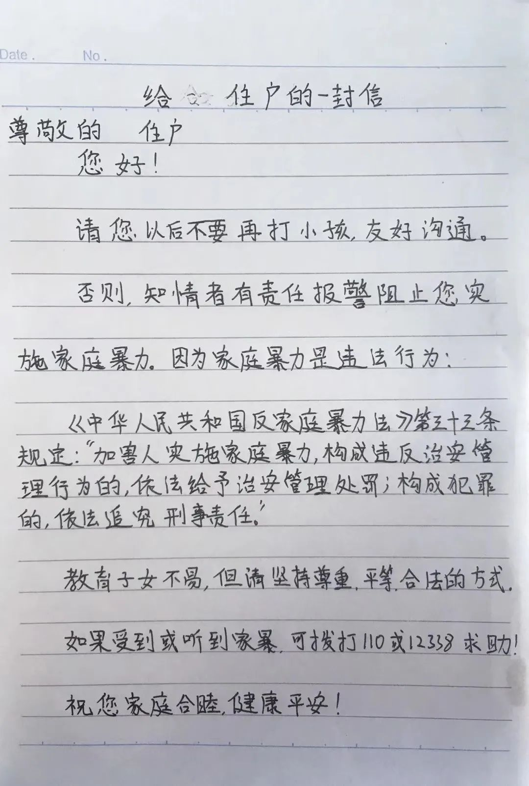
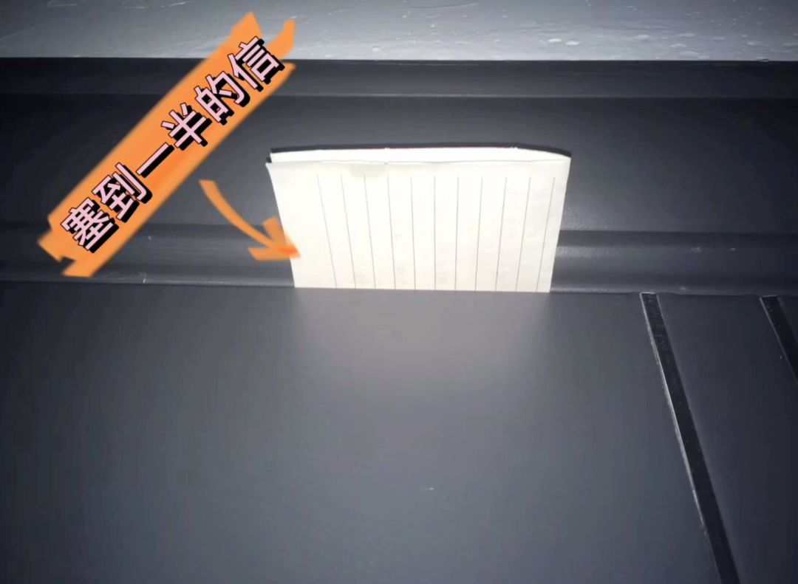

只能上网课的日子，大家都急了丨人间
原文链接 备份链接 看到老师发在班级群里别人家小孩听网课认真做的笔记，自己家的熊孩子却边听网课边睡觉，笔都不拿出来，妈妈们立刻炸了毛。火势再蔓延到孩子爸爸身上，爷爷奶奶也赶来劝，结果就是一场又一场的家庭混战。 配图 |《学区房72小时》 …
⬆️猪西西偷偷寄信的视频⬆️
这段时间网上经常会流传一些关于疫情期间关在家里的段子，其中有一个是说：“疫情期间老婆不听话就随便打，因为她跑不掉也没地方去。”
不知道为什么会有人觉得这样怂恿家暴的话好笑。特别是，当知道这种暴力是在真实发生的时候，还会笑得出来吗？我的身边就在发生着这样的家庭暴力。
一天下午我在阳台晒太阳的时候听见对面楼里一个男人在打小孩，男人的咒骂声、打人的响动和小孩的哀哭声在楼房之间回荡。
我报了警说有人家暴，可是因为我说不出具体的单元楼层，Jing茶来的时候又正好没有传出哭声了，Jing茶就很快走了，说特殊时期不方便轻易上门，让我以后遇到这样的事找物业去调解，后来补了一句：“疫情期间大家都关在家，小孩不听话，这种难免的……”
我隔壁的女人也每天都会几乎是准时打骂她的小孩，但是隔壁的男孩是个小哪吒，不会默默挨打，他每次都会反抗，有时候会当场打电话给亲戚告状，吵架也据理力争，在道理和声音大小上都不吃亏，我听到一些片段：
女人一边打一边骂骂咧咧说小孩成绩不好怎么不去死。
小孩：“我死了你也要负法律责任！我就说是我妈逼我死的。”
女人骂什么生啊养啊的。
小孩：“你自己要生我，生了就要负责。”
女人说：“我管教你，因为你不写作业。”
小孩：“明明是自己弄不好电视就骂我，为什么无缘无故骂我？”
女人继续说他不写作业，说你看看别人的小孩……
小孩：“我为什么要和别的小孩比，你怎么不和其他家长比？”
后来女人追着小孩打，小孩爸爸说了一句：“你们别把玻璃弄破了。”
然后可能小孩在反抗，男人又不得不介入一下，说小孩不应该还手还嘴。
小孩控诉了很多遍：“为什么妈妈要随便骂我？”“你们就没有错吗？”但是也没有人回应他。
女人又说：“我是你妈就有权力管教你。”
小孩：“用这种方式管教吗？”
后来小孩把自己关到一个房间里，男人又介入一次，叫男孩把门打开，又威胁说再不打开就把门拆了，小孩一边反驳对他的指责一边开了门。
后来女人开始哭诉说她的脾气暴躁是因为小孩不学习，她有多担心他的学习，来合理化前面自己发泄情绪的打骂。
其实隔壁女人每天打骂小孩的主题都是小孩不做作业，但是每天的打骂是固定节目的时候。要说这个暴力是被小孩的学习逼急了，还是用管教小孩学习的借口来让她向小孩发泄暴力的行为看起来正当一点？
我把这些讲给身边的家长听的时候，他们说“现在因为疫情人人都被关在家出不去，大人肯定心里也憋着一股气吧”。所以其实不论是说“难免”的Jing茶，还是“理解”大人“憋着一股气”的旁观者，还是不回应小孩质问的那个父亲，还是打小孩的女人自己，大家都很清楚，女人是把暴力发泄在小孩身上。
但是不会有人向小孩承认这一点，他们当着小孩都会说这是为了让你学习。但其实，不管是为了管教学习还是为了发泄情绪，暴力就是暴力，不是吗？
后来隔壁好像平静了一些，大家似乎情绪缓和了，小孩在抱怨他到处疼还有哪里流血了，小孩虽然态度强势声音大，但是没法改变自己遭受暴力的结果。虽然他决不接受家长合理化暴力的那套说辞，也不会有人回应或者认真对待他的质问。他态度鲜明反对家长随意暴力他，但是他还是会原谅家长的，他没有原谅之外的选项。
浪漫的歌词说童年是无忧无虑的，但是小伙伴有一天跟我说大多数人的童年是灰色的。小孩是最弱势最无力改变现状，最没有选择权，和最不自由的。
我想到前不久一个小学生做不完作业哭着打车去孤儿院的视频，好多成年人觉得很萌很好笑，可能没经历过或者忘记了自己做小孩的时候犯一点错误就觉得会有灭顶之灾的恐惧吧。
写到这里对面楼又传来小孩被打的哭声，不知道是不是中午听到的那一家。
小学生做不完作业哭着打车去孤儿院
的视频截图
我把这个“隔壁的哪吒”的故事写出来后，我的朋友问我会不会给那个打孩子的邻居一个提醒。我想过在她下次家暴的时候报警，或者隔着窗户喊一嗓子。但我经过上次不成功的报警让我有些担心Jing茶不会上门，对着窗户喊呢？我不确定会不会有效，还是引来骂战？
“塞个匿名字条？”朋友说。这个主意太赞了！我想到《不要和陌生人说话》里面的邻居给家暴男塞了个纸条说“不许打女人”，是给了家暴男一些压力的。
这个建议一下就让我振奋了，我立马坐下来手写了一封信，大致内容是，请邻居不要再打小孩，友好沟通，并引用《反家暴法》提醒TA家庭暴力的法律责任，最后还写了如果受到和听到家暴可以打110或12338求助。
我想，如果这封信被家长看到，可以给TA们一个提醒：家暴是违法的， TA们的行为会受到监督或是干预的，也相当于一种施压；如果信被小孩看到，那也可以向他传达这样一个信息：他受到家暴是可以向外界求助的，外面有人支持他。

猪西西写给邻居的信
其实我中午就写好了信，但是我还是怂怂的，没有做好（万一激怒对方）正面刚的准备，所以我趁着半夜十二点夜深人静，带上口罩悄悄去塞门缝，可是现在的防盗门的门缝好小，尝试从门底下和侧边塞进去，都塞一小段就塞不进去了，而且每次多弄出一点响动，呆得时间越长，我就多紧张一点，担心被循声出来的邻居撞个正着。
最后，终于从门顶上勉强塞进去啦️，我又回去找了一张纸把信往里面怼了怼，以免它被卡在门中间看不到（之前想过用美工刀dui更加硬一点,可是又觉得半夜持刀显得更加可疑还是选择了纸片），直到一点尖尖也看不见我才放心，一边回去边默念：“希望信被看见，希望以后不再家暴啦。”

送完信的第二天，我从一睁眼就开始张着耳朵听隔壁的动静，他们有没有收到我的信呢？会有怎样的反应？我曾经设想过她会不会隔着窗户来骂我像骂她小孩那么凶，或者上门来质问是不是我干的……不过这些都没发生，我今天听他们家的声音好像更小更远一点，所以不像平时能听清说话的内容，也许什么也没发生。
我沮丧地想，也许像某个电影里女主把信塞进门缝然后信就留在门框还是门槛的某个夹层里从来没被发现正当我这么悲观地设想的时候，突然听到隔壁的小孩大声地说话，里面有几个词“打110” “家暴” “拘留”…这些词之前都没有在他们的对话中出现过，那一刻我就明白他们肯定是收到我的信啦！
起码小孩接收到了我想传达的信息：受到家暴可以向外界求助，外面有人支持他。而从大人这方面来说，既然他们没有过来凶我，说明他们也知道知道自己的行为是不对的，以及有人在监督他们。

下午，我也没有听见隔壁像平时那么近那么清晰的对话，但从更远的声音来辨认，也没有听见他们家传来打骂，甚至有一会儿我听见小孩说了什么逗得他爸在笑。不管是偶然的平静还是真的做出了改变，总之，今天是没有暴力的一天。
我的朋友知道这件事后帮我剪了一个小视频，把这个故事讲出来。有人看了夸我勇敢，也有人留言告诉我TA遇到别人家暴时的情形，说觉得自己不够勇敢。
其实，我也觉得自己不勇敢。我第一次和朋友讲到“隔壁的小哪吒”时，我说“隔壁的小孩真厉害，我也希望我小时候可以这么厉害跟家长正面刚。”我觉得他比我勇敢，甚至是羡慕他，可以说出我小时候想到没有说出的话。或者我也说出过一两次，但是吃了亏就不再说了。
就像现在我跟Jing茶和身边的家长讲述邻居的家暴，当他们合理化家暴小孩的行为时，我也没有再说什么，可能我不相信我说什么会改变他们的态度。但是“小哪吒”每一次都坚持据理力争，做到我小时候或者现在有时候也没有做到的事。
（B站网友留言）
其实每一天，隔壁的女人骂小孩的每一句话都让我烦躁，让我感觉像骂在我头上。不只是因为我们的窗户离得很近，她的声音就像在我耳边响一样，更因为她说的每一句话、每个漏洞百出的逻辑、更不用说同样的方言特有的语调都和我小时候听到的责骂如出一辙：
小孩学习不好就是没有良心（适用任何最坏的形容词）；学习不好就资格玩也没有资格讲理，可以随时和随意被提起来抱怨和打骂（就像任何被社会污名的身份的人，或者是被法律剥夺政治权利的人）。
但是“学习不好”的标准也从来不是客观的，因为几乎没有家长觉得自己的小孩“学习够好”。小孩不接受这套说辞的时候大人就开始用“我是你家长”来耍赖，总之永远有“理由”让暴力继续。

我小时候把自己受到的打骂讲述给其他大人听的时候，他们要么像看那个小孩哭着打车去孤儿院的视频的网友一样笑笑说这个小孩真有趣，要么像隔壁的家长一样劝我相信“这是为你学习好”。
我讲给同龄的小孩听的时候，TA们也会讲TA们被打骂得更惨的经历，好像变成比惨大赛，或者有的小孩认同了家长“打你是为你好”、“成绩不好的人是垃圾”的灌输，开始自我贬低，或者像小大人一样教育彼此，或者歧视成绩不好的学生。没有听到过像“小哪吒”一样说出“我就是成绩不好！我就要玩！”的骄傲宣言。
我最开始讲出“隔壁的哪吒”的故事的时候，我还是把自己当作那个被随意打骂、没有人会认真对待的小孩。讲出他的故事、他不被认真对待的控诉的时候，仿佛也是在用大人的语言、大人的身份讲出我小时不被认真对待的不满和控诉。
我共情了他的愤怒也共情了他的无力，像小时候一样觉得无力改变。直到我的朋友提醒我做点什么的时候，我才想起来自己现在已经是可以和那个家长平等对话的大人。
小学生做不完作业哭着打车去孤儿院
的视频截图
这并不是因为成年人的身份具有什么“合法性”或者更强壮增加了武力值，而是我的处境变了，我不再是那个处在封闭关系环境里被牢牢控制住的弱小者，或者说什么都不会被认真对待只能引人发笑的“半个人”或者“小宠物”。
我可以获取到外部的支持，这不仅是法律，还有每个支持我的人。比如给我建议的朋友，帮我转播的朋友，支持鼓励我的人，包括勇敢控诉的“小哪吒”,TA们都提醒了我忽略的事，自己已经有了一些力量,不是只有挨打和不挨打两个选项，还可以用自己的行为，给暴力制造哪怕是一点阻碍，也是做了改变。
弱小时候的自己做不到的，或者那时候希望有人可以做的，我们现在已经可以做了。而每多一个人表达出自己的支持和行动，也会让更多人发现自己已经具备的力量。


对反家暴议题感兴趣的盆友欢迎添加猪西西的个人微信（不闲聊）

原文链接 备份链接 看到老师发在班级群里别人家小孩听网课认真做的笔记，自己家的熊孩子却边听网课边睡觉，笔都不拿出来，妈妈们立刻炸了毛。火势再蔓延到孩子爸爸身上，爷爷奶奶也赶来劝，结果就是一场又一场的家庭混战。 配图 |《学区房72小时》 …
原文链接 备份链接 “有一次我突击去检查孩子的网课情况，发现她网课是在播放，但是电脑桌面当前窗口显示的却是她的QQ群，原来一群同学正聊得欢。” 记者|王晓珊 编辑| 盛倩玉 小豆 实习生| 甘笠男 刘苗苗 龚纾绮 “咋出来的不是云课堂？难 …
原文链接 备份链接 （1） 随着我亲戚关注我的公众号越来越多（在我堂姐热情推送下），我越发不敢写家里的事情了。一旦涉及到真实的人际关系，情况就复杂很多。以前我的文字跟我的父母是隔开的，现在我今天写了什么，隔壁的婶娘就会跑去跟我父亲说：“哎 …
原文链接 备份链接 非常时期，武汉成了全国人民挂念、祈福的城市。封城后，武汉人民的真实生活是什么样？ 正和岛自1月26日起特别推出《叶青：我在武汉疫区的第N天》专栏。叶青是一位定居武汉40年的市民，也是一名学者和官员。接下来的一段时间，他 …
原文链接 备份链接 截至2月20日24时，全国有湖北、浙江、山东五所监狱发生了新冠肺炎感染疫情，这些均为输入性病例，确诊的505人中暂无死亡 图/Unsplash 文 |《财经》记者 王丽娜 俞琴 辛颖 黄姝静 编辑 | 鲁伟 截至2 …